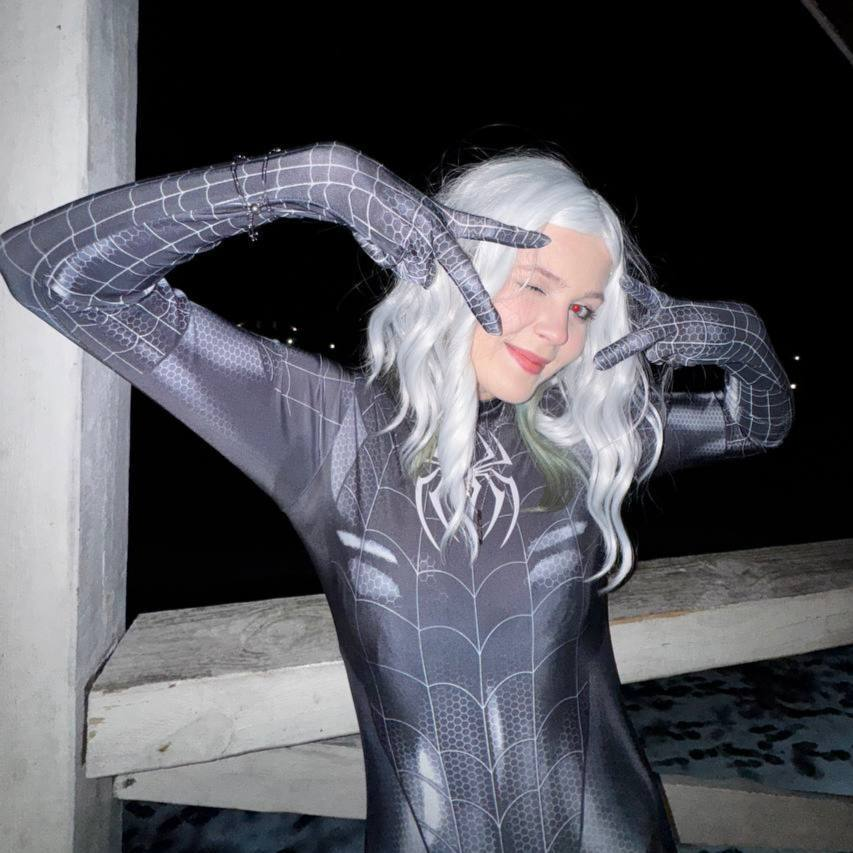

<!DOCTYPE html>
<html>

<head>
  <link rel="icon" type="image/png" href="favicon.png">
  <title>Главная | Polochka24</title>
  <meta charset="utf8">
  <link href="https://cdn.jsdelivr.net/npm/bootstrap@5.3.2/dist/css/bootstrap.min.css" rel="stylesheet">
  <link rel="stylesheet" href="https://cdn.jsdelivr.net/npm/bootstrap-icons@1.11.3/font/bootstrap-icons.min.css">
  <link rel="stylesheet" href="style.css">
</head>

<body>
  <script type="text/javascript" src="script.js"></script>
</body>

</html>


<div class="alert" role="alert">
  <nav class="navbar navbar-expand-lg navbar-dark mt-2" style="border-radius: 20px; background-color:#181818;">

    <div class="container-fluid">
      <a class="navbar-brand ms-5 d-flex align-items-center" href="index.html"> Polochka24 </a> <button class="navbar-toggler"
        type="button" data-bs-toggle="collapse" data-bs-target="#navbarNavAltMarkup" aria-controls="navbarNavAltMarkup"
        aria-expanded="false" aria-label="Toggle navigation">
        <span class="navbar-toggler-icon"></span>
      </button>
      <div class="collapse navbar-collapse" id="navbarNavAltMarkup">
        <div class="navbar-nav ms-auto">
          <a class="nav-link active" aria-current="page" href="index.html">Главная</a>
          <a class="nav-link active" aria-current="page" href="#social">Сядь</a>
          <a class="nav-link active" aria-current="page" href="rule.html">Правила</a>
          <a class="nav-link active" aria-current="page" href="finishedGames.html">Пройденные игры</a>
          <a class="nav-link active" aria-current="page" href="watch.html">Гляделки</a>
          <a class="nav-link active" aria-current="page" href="plyushki.html">Плюшки</a>
        </div>
      </div>
    </div>

  </nav>


  <div class="d-flex align-items-center justify-content-center gap-3">
    
  </div>

  <div class="text-center mt-4" style="color:white;">
    <h2>О стримере</h2>
    <div class="card">
      <div class="card-body" style="font-size: medium;">
        <figure>
          <blockquote class="blockquote" style="font-size: larger;">
            <p><cite title="Source Title">Я может быть чудовище, но искренне стараюсь быть хорошей</p>
          </blockquote>
          <figcaption class="blockquote-footer">
            Любимая цитата Polochka24</cite>
          </figcaption>
        </figure>
      </div>
    </div>


    <div class="about-text mt-2">
      <p>
        "Полина, более известная под ником Polochka24 — стример
        и любительница уютных игровых трансляций, мемов и
        ламповой атмосферы. На стримах часто проходят
        прохождения игр, обсуждения фильмов, мемов и просто
        дружеское общение со зрителями.
      </p>

      <p>
        Полина также любительница неестественного света,
        гирлянд, стиля, котиков и нуарных тонов.
      </p>

      <p>
        Вопросы про рост стримера со временем начали
        надоедать, ведь Полочка спокойно дотягивается до
        последних полок в магазине, что само по себе можно
        считать чудом.
      </p>

      <p>
        Точный возраст стример предпочитает не раскрывать,
        шутливо ссылаясь на то, что просто не помнит.
        Однако ходят слухи, что всё это шутки и все знают
        настоящий возраст стримера.
      </p>
    </div>


    <div class="about-text mt-4">
      <p>
        Если вы хотите испортить отношения со стримером — приготовьте
        ей кашу с комочками, почаще ругайтесь и подарите что-нибудь жёлтое.
        Гарантируем, что после такого наладить отношения не получится,
        а настроение стримера будет безнадёжно испорчено…"
      </p>
      <p>
        <strong> P.S. </strong>Крайне не советуем портить настроение стримера. Ходят слухи, что за это придётся дорого
        поплатиться перед неким Пуншем…
      </p>
    </div>


    <div id="social" class="card mx-auto" style="width: 30rem; margin-top: 50px;">
      
    </div>


    <div class="text-center mt-4" style="color:white;">
      <h2>Сядь на полочку!</h2>
    </div>
    <div class="footer" style="color:gray;">
      <cite title="Source Title">пожалуйста</cite>

      <div class="links mt-2">
        <div class="d-flex justify-content-center gap-5 mt-3 me-5">
          <a class="btn mt-5 ms-5" href="https://www.twitch.tv/polochka24" role="button"> </a>
          <a class="btn mt-5 ms-5" href="https://t.me/polikinez" role="button"> </a>
          <a class="btn mt-5 ms-5" href="https://steamcommunity.com/profiles/76561199387714575" role="button"> </a>
        </div>
        <div class="d-flex justify-content-center gap-5 me-5">
          <a class="btn mt-5 ms-5" href="https://www.youtube.com/@polin2405" role="button"> </a>
          <a class="btn mt-5 ms-5" href="https://boosty.to/polchk24?share=ios_blog_link" role="button"> </a>
          <a class="btn mt-5 ms-5" href="https://www.tiktok.com/@polochka24_fan" role="button"> </a>
        </div>
      </div>


      

    </div>
  </div>


  <footer class="d-flex justify-content-between align-items-center p-3">
        <span class="text-light">© Polochka24</span>
        <div class="d-flex align-items-center gap-3">
          <a href="https://www.twitch.tv/polochka24" class="text-light"><i class="bi bi-twitch"></i></a>
          <a href="https://t.me/polikinez" class="text-light"><i class="bi bi-telegram"></i></a>
          <a href="https://www.youtube.com/@polin2405" class="text-light"><i class="bi bi-youtube"></i></a>
          <a href="https://steamcommunity.com/profiles/76561199387714575" class="text-light"><i
              class="bi bi-steam"></i></a>
        </div>
      </footer>

</div>